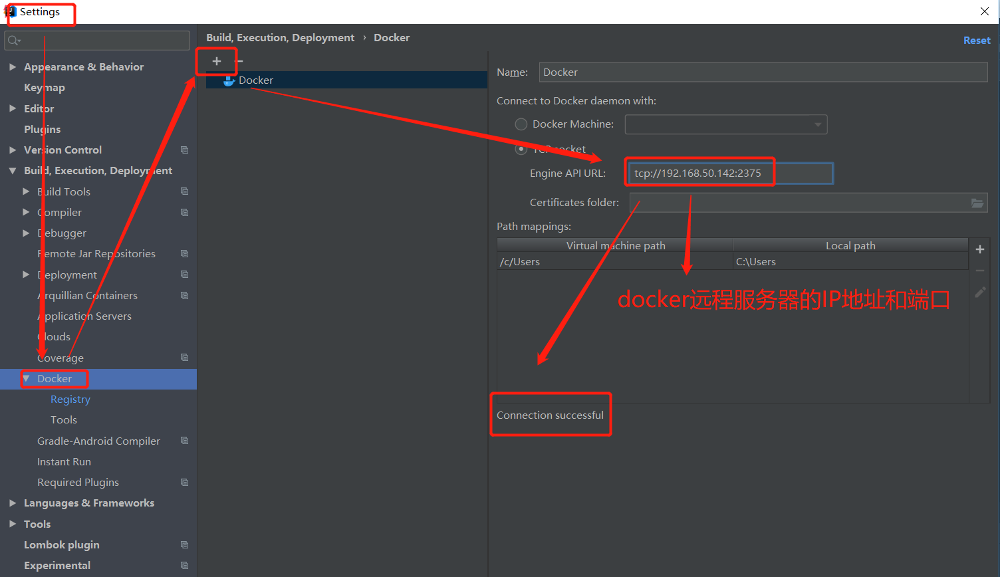
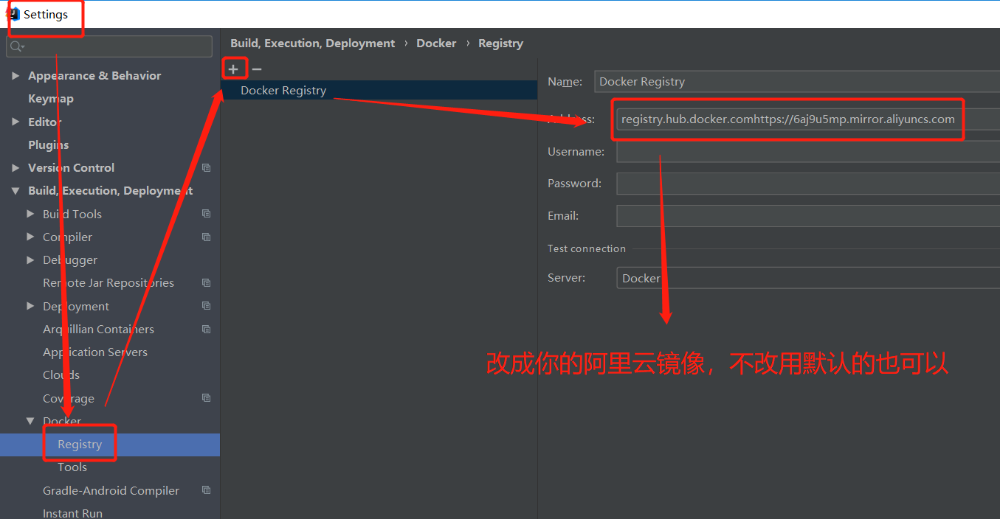
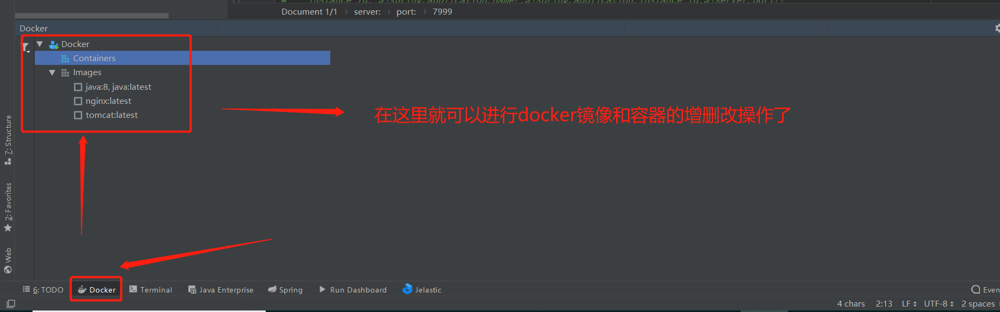
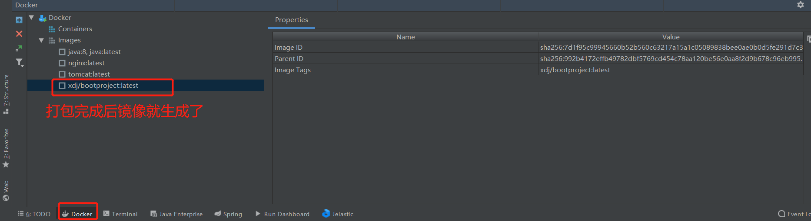
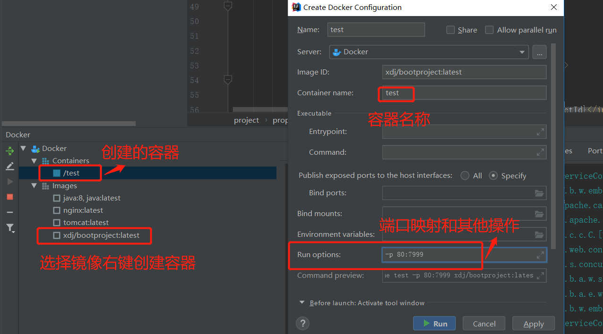

打包项目代码
项目开发完成测试通过后，在idea的terminal中输入maven命令mvn clean package将项目打包。
将target目录下的项目jar包扔到linux服务器的/usr/local/docker/bootproject/路径下。
编写Dockerfile文件
编写Dockerfile文件，放在项目jar包的同目录下。Dockerfile：文件内容如下：
FROM java:8 —定制的镜像都是基于 FROM 的镜像，这里的 java 就是定制需要的基础镜像。后续的操作都是基于java8。
VOLUME /tmp —定义数据卷目录。在启动容器时忘记挂载数据卷，会自动挂载到匿名卷。
ADD boot.jar /boot.jar —复制指令，从上下文目录中复制文件或者目录到容器里指定路径。
EXPOSE 7999 —声明端口
ENTRYPOINT [“java”,”-jar”,”/boot.jar”] –用于运行程序，在执行 docker run 的时候可以指定 ENTRYPOINT 运行所需的参数
构建镜像
在Dockerfile文件所在的目录下运行docker build -t project-image .命令构建镜像。
其中project-image是镜像名称，.这个点代表的是当前路径。
运行容器
将镜像运行生成容器：docker run -id –name project-container -p 80:7999 project-image
访问服务器端口，项目部署完成！但是上面的部署方式太繁琐，在实际的开发当中我们可以通过以下方式实现idea打包项目一键部署至tdocker
Idea集成docker实现打包一键部署
Docker开启远程访问
1 | 进入到/lib/systemd/system/docker.service |
Idea安装docker插件
比较新版本的idea默认安装了docker，如果没有可以自行安装：
打开Idea，从File->Settings->Plugins->Install JetBrains plugin进入插件安装界面，在搜索框中输入docker，可以看到Docker integration，点击右边的Install按钮进行安装。安装后重启Idea。
Iead配置docker
配置docker连接到远程的docker服务

修改docker使用阿里的镜像加速器

这是我阿里云上镜像仓库加速器：registry.hub.docker.comhttps://6aj9u5mp.mirror.aliyuncs.com
docker集成mawen插件
docker集成mawen插件：docker-mawen-plugin。
在项目pom文件
1 | <build> |

至此idea集成docker的配置完成了
一键打包项目生成镜像
在terminal中执行打包命令：mvn clean package docker:build就可以一键生成项目的镜像到远程服务器的docker中了。

选择镜像生成容器：

至此使用idea一键打包部署项目至docker完成，后续docker镜像、容器的增删改均可在idea中完成。
最后更新： 2020年04月28日 19:33
原始链接： http://xdj-java-001.github.io/blog/2020/04/28/idea-dp-docker/